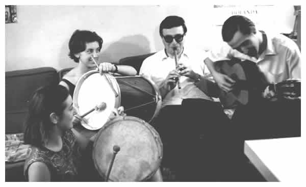

Compañeros del Coro. Malena, la esposa de Gerardo, toca una caja challera, Celia Lubenfeld el bombo, Horacio López la quena y Masana la guitarra (1963). Aquel bombo sería utilizado para la construcción del cello legüero.
© Copyright 2004, Sebastián Masana.